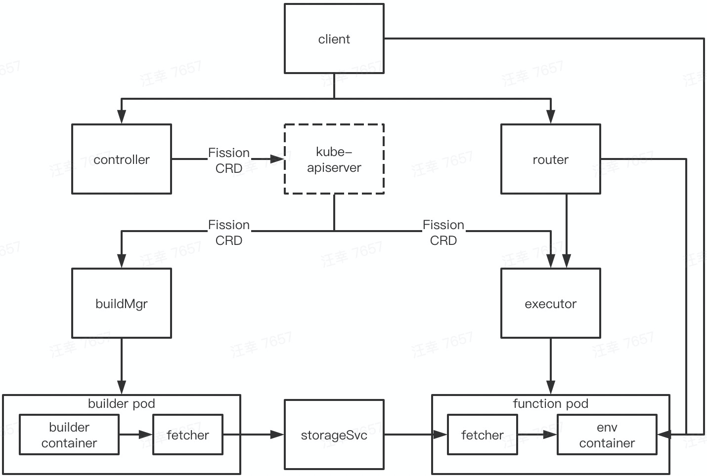

本文基于 Fission v1.10.0 版本
最近 release
开始学习之前，先看看本 repo 最近在干什么
- 1.10.0 [2020.06]
- S3 as a backend for Storage Service
- Disabling env variable based discovery in Functions
- Kube Context flag in Fission CLI
- 1.9.0 [2020.05]
- Go 1.14 support
- Function Level timeout
- External Nats streaming
- PodSecurityPolicy for Logger
- 1.8.0 [2020.02]
- Go 1.13 support
- Dry option to view the generated spec
- Resource setting for fetcher
总的来说，基本是一些功能的补充和增强，没有大的更新
部署
结合实战来学习本 repo
安装
安装 client
$ curl -Lo fission https://github.com/fission/fission/releases/download/1.10.0/fission-cli-linux \
&& chmod +x fission && sudo mv fission /usr/local/bin/
安装 server
$ kubectl create ns fission
$ kubectl -n fission apply -f \
https://github.com/fission/fission/releases/download/1.10.0/fission-core-1.10.0.yaml
如果目标 k8s 集群没有相应的 pv provision 机制，还需要：
- 修改 fission-storage-pvc storageClass 为 manual
- 再建个本地 pv 凑活一下
# fission-pv.yaml
apiVersion: v1
kind: PersistentVolume
metadata:
name: fission-storage-pv
labels:
type: local
spec:
storageClassName: manual
capacity:
storage: 8Gi
accessModes:
- ReadWriteOnce
hostPath:
path: "/mnt/fission-storage"
确认部署组件都已正常工作
$ kubectl -n fission get pod
NAME READY STATUS RESTARTS AGE
buildermgr-956dc588-2475q 1/1 Running 0 6m32s
controller-c7b4bc759-5r8c9 1/1 Running 0 6m32s
executor-7489f6b8c-6vcfd 1/1 Running 0 6m32s
kubewatcher-77bd55f9dc-7p44k 1/1 Running 0 6m32s
router-7784db5696-lplqx 1/1 Running 0 6m32s
storagesvc-685c5dd95d-4csdh 1/1 Running 0 6m32s
timer-6565fbbccc-6btrg 1/1 Running 0 6m32s
验证
$ fission env create --name nodejs --image fission/node-env:1.10.0
$ curl -LO https://raw.githubusercontent.com/fission/fission/master/examples/nodejs/hello.js
$ fission fn create --name hello-js --env nodejs --code hello.js
$ fission fn test --name hello-js
hello, world!
卸载
$ kubectl -n fission delete -f \
https://github.com/fission/fission/releases/download/1.10.0/fission-core-1.10.0.yaml
$ kubectl delete ns fission
$ kubectl delete pv fission-storage-pv
架构
安装完 Fission 之后，来梳理下安装的组件
| pod | 容器 | 命令 | 源码 repo |
|---|---|---|---|
| buildermgr | buildermgr | fission-bundle --builderMgr ... | Fission |
| controller | controller | fission-bundle --controllerPort ... | Fission |
| executor | executor | fission-bundle --executorPort ... | Fission |
| router | router | fission-bundle --routerPort ... | Fission |
| storagesvc | storagesvc | fission-bundle --storageServicePort ... | Fission |
注：
- kubewatcher 和 timer 虽然缺省安装了，但不是 core 组件，暂不说明
- 除此之外，函数生成的 pod 还自带一个 fetcher 容器，该容器也是 Fission repo 编译而来
整体架构是：

其中：
- fission client 封装了网络调用
- controller 处理函数相关对象的 crud，并转化为 k8s 里的 CRD 操作
- router 负责处理函数的寻址、触发
- buildermgr 处理函数编译相关工作
- executor 负责函数实例化管理
- storageSvc 负责存储函数代码的编译包
直接对着架构图解读，比较抽象，在使用小节会结合实例来详细说明
概念
Fission 引入了 environment、package、function、trigger 四类 CRD。其中：
- environment 记录了函数运行环境、编译环境相关的信息
- package 记录了函数源码、编译包相关的信息
- function 记录了函数运行相关的信息
- trigger 记录了函数触发相关的信息
在使用小节会结合实例来详细说明
使用
基本功能
本小节会按照“从零开始写一个 go 函数”的流程，来串联所有组件，梳理功能
创建 go 环境
$ fission env create --name go --image fission/go-env-1.12:1.10.0 --builder fission/go-builder-1.12:1.10.0
上述命令创建了 go 环境，指定了后续编译、运行的镜像信息。涉及的完整流程是：
- fission client 向 controller 发起了创建 env 的请求
controller 收到请求后，创建了 environment CR
$ kubectl get environment NAME AGE go 5m15sbuildermgr watch 到 environment CR 后，创建了 builder pod
$ kubectl -n fission-builder get pod NAME READY STATUS RESTARTS AGE go-2598787-6d879c4b9f-n5654 2/2 Running 0 7mexecutor watch 到 environment CR 后，创建了 pod pool
$ kubectl -n fission-function get pod NAME READY STATUS RESTARTS AGE poolmgr-go-default-2598787-56b88b84d7-cv9b7 2/2 Running 0 18m
注：
编写 go 代码
$ cat hello.go
package main
import (
"net/http"
)
func Hello(w http.ResponseWriter, r *http.Request) {
msg := "hello, world!\n"
w.Write([]byte(msg))
}
fission go 代码的编写比较常规，没什么特殊要求，接口参数保持规范即可
创建函数
$ fission fn create --name hello-go --env go --src hello.go --entrypoint Hello
上述命令指定 go env 以上述代码创建了 fission 函数。涉及的完整流程是：
- fission client 向 controller 发起了创建 fn 的请求
controller 收到请求后，创建了 function CR 和 package CR
# 用全名是因为跟 Kubeless function 重名，同时安装时，让命令无二意性 $ kubectl get function.fission.io NAME AGE hello-go 5m $ kubectl get package NAME AGE hello-go-b69975a4-913b-45e7-928b-de40c23332b3 5m18s其中，package 里存储了 hello.go 的源码
- buildmgr watch 到 package CR 后，向上面创建的 builder pod 发起编译请求
- builder container 从 package 里获取源码，开始编译
builder container 编译完成后，通知 fetcher container 将编译包上传至 storagesvc
# 实际上最终也就上传到了我们前面创建 pv 所指定的目录 $ du -sh /mnt/fission-storage/fission-functions/* 4.7M /mnt/fission-storage/fission-functions/f8903b8b-5a34-4fc7-8f4a-ed93bc61ea95builder container 将编译日志和编译包的 url 等信息都存储于 package 中
# 可以查看编译过程具体干了些啥 $ kubectl get package hello-go-b69975a4-913b-45e7-928b-de40c23332b3 -o yaml ... + go build -buildmode=plugin -i -o /packages/hello-go-b69975a4-913b-45e7-928b-de40c23332b3-kz1zbh-xmguf3 . ...
触发函数
$ fission fn test --name hello-go
hello, world!
上述命令测试了刚刚创建的函数。涉及的完整流程是：
- fission client 向 router 发起了触发 fn 的请求
- router 收到请求后，请求 executor 提供函数地址
- executor 从 pool 中选出一个 ready 的 pod，通知 pod 里的 fetch 容器
- fetch 容器从 storagesvc 中获取编译包，取完通知 env 容器
- env 容器加载函数，加载完成返回函数地址给 router
- router 返回函数地址到 fission client
- fission client 发起函数调用请求
函数扩缩
在 PoolMgr 模式下，同一个函数最多实例化 pool size 个 pod，长时间没有访问时，pod 会销毁，除此之外，并没有其它的扩缩容能力。Fission 的自动扩缩，主要是针对 NewDeploy 模式
$ fission fn create --name hello-go-deploy --env go --src hello.go --entrypoint Hello --executortype newdeploy \
--minscale 0 --maxscale 3 --targetcpu 50
当上述函数第一次被触发时，会创建一个 HPA，实际的伸缩能力也是由 HPA 提供的。不过，HPA 并不具备缩容到0的能力，"scale up from zero" 和 "scale down to zero" 的能力是 executor 补足的
冷启动
Fission、Kubeless、OpenFaas 3个 faas 实现里，Fission 是唯一一个有冷启动优化的，也就是 PoolMgr 模式，省去了镜像拉取、容器启动的时间。而 Kubeless 直接没有提及，OpenFaas 只有最佳实践的建议，也就是不要配置扩缩容时，最小副本数低于1
函数触发
上述小节以命令行的形式，手工触发函数调用，而在生产环境，Fission 提供了以下几种触发方式：
http trigger
$ fission httptrigger create --name hello --url /hello --method GET --function hello-go trigger 'hello' created # 通过以下地址触发 http://<router URL>:<port>/hellomessage queue trigger
Fission 支持多种 message queue，包括：NATS、Kafka、KEDA，不过因为需要额外安装组件，这里就不再演示了
timer trigger
$ fission timer create --name minute --function hello-go --cron "*/1 * * * *" trigger 'minute' created Current Server Time: 2020-08-19T12:59:43Z Next 1 invocation: 2020-08-19T13:00:43Z
workflow
fission-workflows 是用于编排函数执行顺序的子项目，参考文档
不过，这个项目应该是凉了，最新的 release 0.6.0 是18年发布的，安装、使用各种问题：
- 如安装时，helm 里使用的 jaegertracing/jaeger-agent 是 latest 镜像，跟启动参数已经不兼容了，可以手工替换成 1.8.2 版本
- 如使用时，参考文档案例跑不通，相关的 issue 无人处理